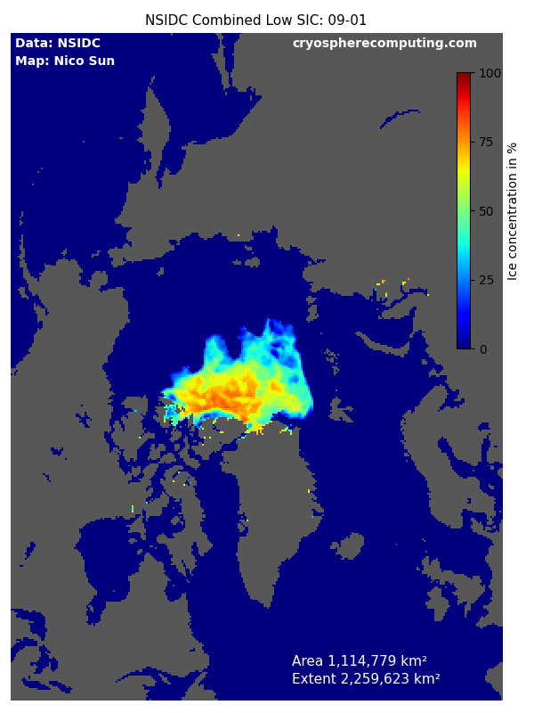
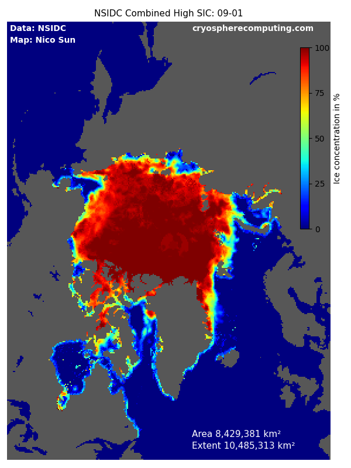

Min / Max SIC values
This page shows the total sea ice variability combining all years since 1979 together.
How to read the maps: If the low ice map shows ice cover then this area has never been icefree.
If the high ice map shows icefree area then this area was never ice covered. The high SIC images also show where measurement errors are most commonly found.


Data used
Cavalieri, D. J., C. L. Parkinson, P. Gloersen, and H. J. Zwally. 1996, updated yearly. Sea Ice Concentrations from Nimbus-7 SMMR and DMSP SSM/I-SSMIS Passive Microwave Data, Version 1.1 Boulder, Colorado USA. NASA National Snow and Ice Data Center Distributed Active Archive Center. doi: https://doi.org/10.5067/8GQ8LZQVL0VL.